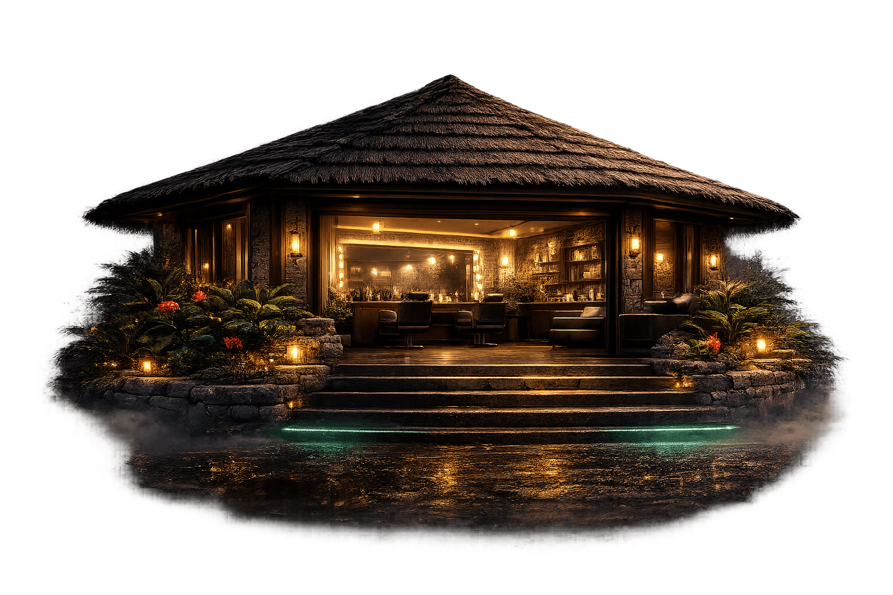

Окрашивание волос в Новосаратовке
В «Хижине красоты» окрашивание строится на точной работе с цветом, состоянием волос и будущим результатом. В фокусе — чистый оттенок, аккуратная техника и сохранение качества волос.
Камерная студия в Новосаратовке подойдёт тем, кто ищет окрашивание волос в Новосаратовке без спешки, с вниманием к деталям и понятным подходом на каждом этапе: от консультации до финального оттенка.

Какие виды окрашивания доступны
Окрашивание подбирается индивидуально — с учётом базы, плотности волос, предыдущих процедур и желаемого эффекта. В студии выполняются как спокойные естественные решения, так и более сложные задачи, требующие точной колористики.
Чистый однотон и тонирование
Подходит для обновления оттенка, нейтрализации нежелательной теплоты, придания цвету глубины, блеска и аккуратного завершённого вида.
Блонд и сложные техники
Осветление, выход в блонд, мягкие переходы, коррекция неровного фона, работа с длиной и чистотой оттенка без случайных решений.
Коррекция цвета
Если оттенок ушёл в рыжий, стал неровным или потерял глубину, задача решается поэтапно — с анализом базы и бережным подходом к качеству волос.
Окрашивание с уходом
После окрашивания можно дополнить работу уходовой процедурой, чтобы сохранить мягкость волос, придать им плотность и красивый блеск по длине.
Как строится работа с окрашиванием
Хороший цвет начинается не с формулы, а с понимания исходных данных. Перед окрашиванием учитываются структура волос, плотность, история предыдущих процедур, наличие бытового пигмента и желаемый результат.
Что важно в процессе
- оценка исходной базы и состояния волос;
- подбор техники под конкретную задачу;
- контроль фона осветления и чистоты оттенка;
- бережное отношение к длине и качеству волос;
- рекомендации по поддержанию цвета дома.
Результат, к которому идём
- ровный и понятный оттенок без грязи;
- гармоничный цвет, который подходит внешности;
- спокойный блеск и визуально более ухоженная длина;
- результат, который красиво смотрится не только в день визита.
Почему выбирают «Хижину красоты»
«Хижина красоты» — не потоковый салон, а камерная студия, где можно спокойно сосредоточиться на результате. Продуманное освещение помогает объективно видеть оттенок, а формат работы позволяет уделить достаточно времени каждой задаче — особенно когда речь идёт о блонде, коррекции цвета или сложных переходах.
Если вы ищете блонд в Новосаратовке, тонирование волос в Новосаратовке или аккуратное окрашивание волос в Санкт-Петербурге рядом с домом, эта страница создана именно под такие запросы.
Частые вопросы об окрашивании
Можно ли убрать рыжий оттенок?
Да, но способ зависит от базы и истории волос. Иногда достаточно точной нейтрализации и тонирования, а иногда нужна поэтапная коррекция цвета.
Делаете ли выход из тёмного?
Да, такие задачи возможны. Работа строится аккуратно, с учётом состояния волос и реалистичного плана, чтобы сохранить длину и качество.
Можно ли прийти только на тонирование?
Да, если нужно освежить оттенок, убрать лишнюю теплоту или вернуть цвету аккуратный вид между окрашиваниями.
Есть ли уход после окрашивания?
Да, при необходимости окрашивание дополняется уходом, который делает волосы более мягкими, гладкими и визуально более блестящими.
Запись на окрашивание волос
Записаться можно удобным способом: через Telegram, Dikidi или по телефону. Если вы не уверены, какая услуга подойдёт именно вам, можно сначала написать и кратко описать задачу — это поможет точнее подобрать формат окрашивания.